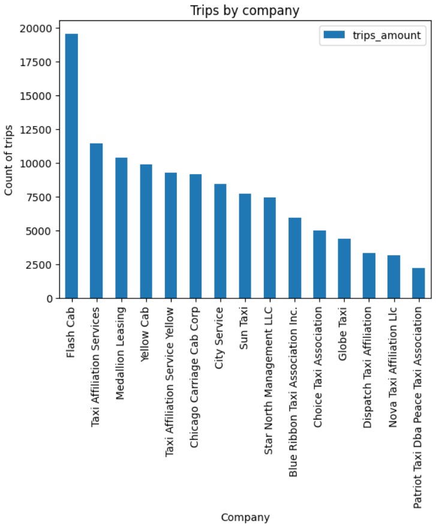
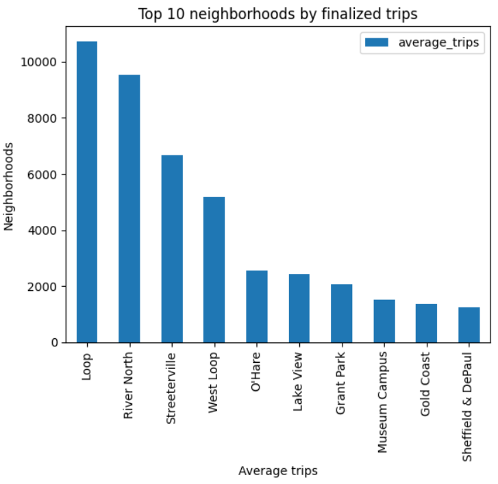

Exploratory analysis and hypothesis testing to understand taxi activity in Chicago and evaluate whether trip duration from the Loop to O’Hare changes on rainy Saturdays.
project_sql_result_01.csv: taxi company trip counts (Nov 15–16, 2017)project_sql_result_04.csv: average trips by dropoff neighborhood (Nov 2017)project_sql_result_07.csv: Loop → O’Hare trips with weather and durationScreenshots of the main plots from the notebook.
Figure 1 — Taxi companies (trips)
Trip counts by company (Nov 15–16, 2017).
Figure 2 — Top 10 dropoff neighborhoods
Neighborhoods with the highest average completed trips (Nov 2017).
Last updated: